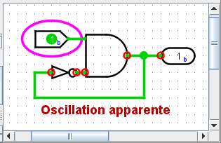

Erreurs oscillatoires
L'algorithme de propagation, qui fonctionne normalement en silence sans aucun problème, devient très visible lorsque vous créez un circuit qui oscille.

Ce circuit est actuellement dans un état stable. Mais si vous changez l'entrée à 1, le circuit entrera effectivement dans une boucle infinie. Après un certain temps, Logisim abandonnera simplement et vous montrera un message "Oscillation apparente" vous indiquant qu'il croit que le circuit oscille.

Il affichera les valeurs qu'il a au moment où il abandonne. Ces valeurs auront l'air erronées - dans cette capture d'écran, la porte ET émet 1 bien qu'une de ses entrées soit 0, mais il se peut que la porte NON ait une entrée 1 et une sortie 1.
Logisim encercle en rouge chaque endroit qui semble être impliqué dans l'oscillation. Si un point impliqué se trouve dans un sous-circuit, Logisim dessine le contour de ce sous-circuit en rouge.
Lorsque Logisim détecte une oscillation, il arrête toute nouvelle simulation. Vous pouvez réactiver la simulation en utilisant le menu | Simulation |→| Simulation activée |.
Logisim détecte les oscillations grâce à une technique assez simple : Si la simulation du circuit semble trop répétitive, il abandonne simplement et signale l'oscillation. (Les points qu'il identifie comme étant impliqués sont ceux qui ont été modifiés dans les derniers 25% des itérations). Ainsi, il pourrait rapporter à tort une oscillation, en particulier si vous travaillez avec un circuit exceptionnellement grand ; mais ce serait un circuit plus grand que tous ceux que j'ai construits en utilisant Logisim. Dans tous les cas, si vous êtes certain que la déclaration est erronée, vous pouvez configurer le nombre d'itérations effectuées avant que l'oscillation ne se produise via la fenêtre Options du projet Itérations jusqu'a oscillation.
Suite: Limitations.